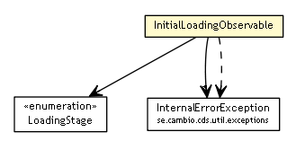

se.cambio.cds.util
Class InitialLoadingObservable

java.lang.Object
 java.util.Observable
se.cambio.cds.util.InitialLoadingObservable
java.util.Observable
se.cambio.cds.util.InitialLoadingObservable
public class InitialLoadingObservable
- extends Observable
| Methods inherited from class java.lang.Object |
clone, equals, finalize, getClass, hashCode, notify, notifyAll, toString, wait, wait, wait |
setCurrentLoadingStage
public static void setCurrentLoadingStage(InitialLoadingObservable.LoadingStage loadingStage)
setCurrentLoadingStageFinished
public static void setCurrentLoadingStageFinished()
setCurrentProgress
public static void setCurrentProgress(Double currentProgress)
getCurrentLoadingStage
public static InitialLoadingObservable.LoadingStage getCurrentLoadingStage()
getTotalLoadingProgress
public static Double getTotalLoadingProgress()
getCurrentStageProgress
public static Double getCurrentStageProgress()
addLoadingException
public static void addLoadingException(InternalErrorException e)
getLoadingExceptions
public static Collection<InternalErrorException> getLoadingExceptions()
getDelegate
public static InitialLoadingObservable getDelegate()
Copyright © 2013 Cambio. All Rights Reserved.